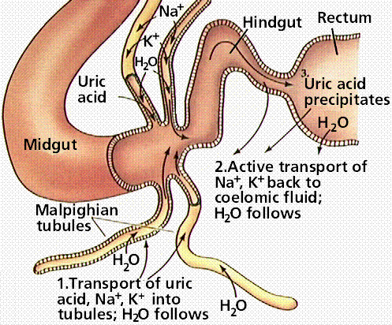
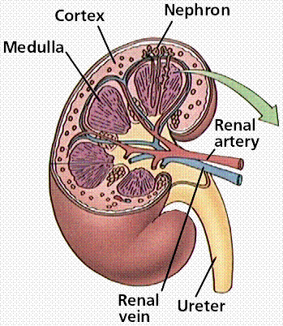
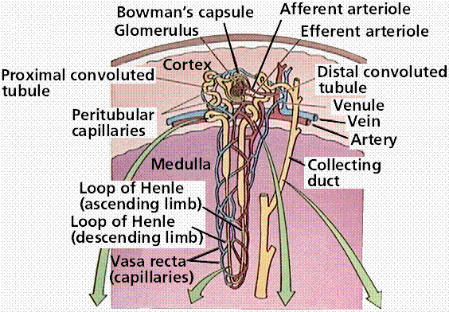
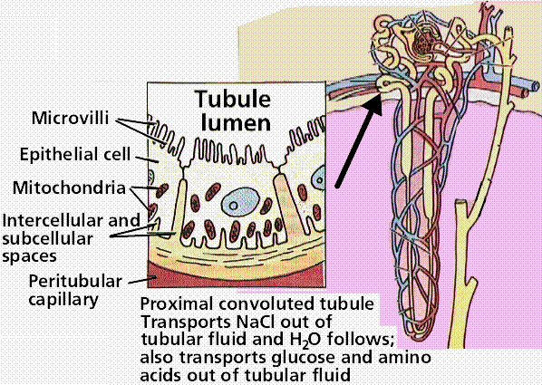
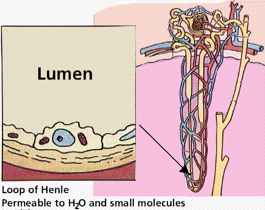
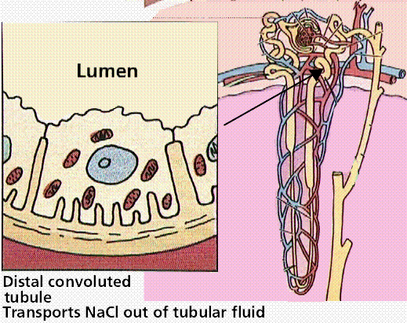
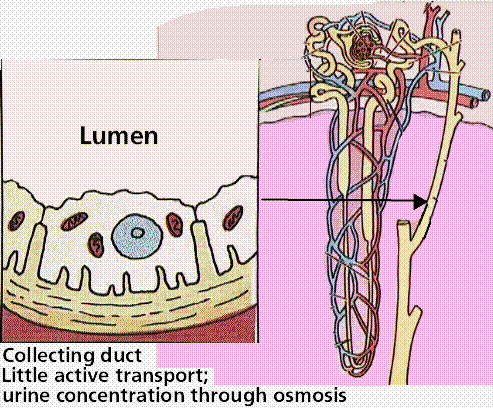

Regulation of Extracellular Fluids | Nitrogen Wastes | Water and Salt Balance
Excretory System Functions | Invertebrate Excretory Organs | Vertebrates Have Paired Kidneys
The Human Excretory System | Kidney Function | Hormone Control of Water and Salt
Disruption of Kidney Function | Links
Cells produce water and carbon dioxide as by-products of metabolic breakdown of sugars, fats, and proteins. Chemical groups such as nitrogen, sulfur, and phosphorous must be stripped, from the large molecules to which they were formerly attached, as part of preparing them for energy conversion. The continuous production of metabolic wastes establishes a steep concentration gradient across the plasma membrane, causing wastes to diffuse out of cells and into the extracellular fluid.
Single-celled organisms have most of their wastes diffuse out into the outside environment. Multicellular organisms, and animals in particular, must have a specialized organ system to concentrate and remove wastes from the interstitial fluid into the blood capillaries and eventually deposit that material at a collection point for removal entirely from the body.
Excretory systems regulate the chemical composition of body fluids by removing metabolic wastes and retaining the proper amounts of water, salts, and nutrients. Components of this system in vertebrates include the kidneys, liver, lungs, and skin.
Not all animals use the same routes or excrete their wastes the same way humans do. Excretion applies to metabolic waste products that cross a plasma membrane. Elimination is the removal of feces.
Nitrogen wastes are a by product of protein metabolism. Amino groups are removed from amino acids prior to energy conversion. The NH2 (amino group) combines with a hydrogen ion (proton) to form ammonia (NH3).
Ammonia is very toxic and usually is excreted directly by marine animals. Terrestrial animals usually need to conserve water. Ammonia is converted to urea, a compound the body can tolerate at higher concentrations than ammonia. Birds and insects secrete uric acid that they make through large energy expenditure but little water loss. Amphibians and mammals secrete urea that they form in their liver. Amino groups are turned into ammonia, which in turn is converted to urea, dumped into the blood and concentrated by the kidneys.
The excretory system is responsible for regulating water balance in various body fluids. Osmoregulation refers to the state aquatic animals are in: they are surrounded by freshwater and must constantly deal with the influx of water. Animals, such as crabs, have an internal salt concentration very similar to that of the surrounding ocean. Such animals are known as osmoconformers, as there is little water transport between the inside of the animal and the isotonic outside environment.
Marine vertebrates, however, have internal concentrations of salt that are about one-third of the surrounding seawater. They are said to be osmoregulators. Osmoregulators face two problems: prevention of water loss from the body and prevention of salts diffusing into the body. Fish deal with this by passing water out of their tissues through their gills by osmosis and salt through their gills by active transport. Cartilaginous fish have a greater salt concentration than seawater, causing water to move into the shark by osmosis; this water is used for excretion. Freshwater fish must prevent water gain and salt loss. They do not drink water, and have their skin covered by a thin mucus. Water enters and leaves through the gills and the fish excretory system produces large amounts of dilute urine.
Terrestrial animals use a variety of methods to reduce water loss: living in moist environments, developing impermeable body coverings, production of more concentrated urine. Water loss can be considerable: a person in a 100 degree F temperature loses 1 liter of water per hour.
Many invertebrates such as flatworms use a nephridium as their excretory organ. At the end of each blind tubule of the nephridium is a ciliated flame cell. As fluid passes down the tubule, solutes are reabsorbed and returned to the body fluids.
Excretory system of a flatworm. Image from Purves et al., Life: The Science of Biology, 4th Edition, by Sinauer Associates (www.sinauer.com) and WH Freeman (www.whfreeman.com), used with permission.
Excretory system of an earthworm. Image from Purves et al., Life: The Science of Biology, 4th Edition, by Sinauer Associates (www.sinauer.com) and WH Freeman (www.whfreeman.com), used with permission.
Body fluids are drawn into the Malphigian tubules by osmosis due to large concentrations of potassium inside the tubule. Body fluids pass back into the body, nitrogenous wastes empty into the insect's gut. Water is reabsorbed and waste is expelled from the insect.

Excretory system of an ant. Images from Purves et al., Life: The Science of Biology, 4th Edition, by Sinauer Associates (www.sinauer.com) and WH Freeman (www.whfreeman.com), used with permission.
ALL vertebrates have paired kidneys. Excretion is not the primary function of kidneys. Kidneys regulate body fluid levels as a primary duty, and remove wastes as a secondary one.
The urinary system is made-up of the kidneys, ureters, bladder, and urethra. The nephron, an evolutionary modification of the nephridium, is the kidney's functional unit. Waste is filtered from the blood and collected as urine in each kidney. Urine leaves the kidneys by ureters, and collects in the bladder. The bladder can distend to store urine that eventually leaves through the urethra.






Human excretory system and the details of the kidney. Images from Purves et al., Life: The Science of Biology, 4th Edition, by Sinauer Associates (www.sinauer.com) and WH Freeman (www.whfreeman.com), used with permission.
The nephron consists of a cup-shaped capsule containing capillaries and the glomerulus, and a long renal tube. Blood flows into the kidney through the renal artery, which branches into capillaries associated with the glomerulus. Arterial pressure causes water and solutes from the blood to filter into the capsule. Fluid flows through the proximal tubule, which include the loop of Henle, and then into the distal tubule. The distal tubule empties into a collecting duct. Fluids and solutes are returned to the capillaries that surround the nephron tubule.
Filtration of the blood in the fine structure of the kidneys. Image from Purves et al., Life: The Science of Biology, 4th Edition, by Sinauer Associates (www.sinauer.com) and WH Freeman (www.whfreeman.com), used with permission.
The nephron has three functions:
Nephrons filter 125 ml of body fluid per minute; filtering the entire body fluid component 16 times each day. In a 24 hour period nephrons produce 180 liters of filtrate, of which 178.5 liters are reabsorbed. The remaining 1.5 liters forms urine.
In some cases, excess wastes crystallize as kidney stones. They grow and can become a painful irritant that may require surgery or ultrasound treatments. Some stones are small enough to be forced into the urethra, others are the size of huge, massive boulders (or so I am told).
Kidneys perform a number of homeostatic functions:
Water reabsorption is controlled by the antidiuretic hormone (ADH) in negative feedback. ADH is released from the pituitary gland in the brain. Dropping levels of fluid in the blood signal the hypothalamus to cause the pituitary to release ADH into the blood. ADH acts to increase water absorption in the kidneys. This puts more water back in the blood, increasing the concentration of the urine. When too much fluid is present in the blood, sensors in the heart signal the hypothalamus to cause a reduction of the amounts of ADH in the blood. This increases the amount of water absorbed by the kidneys, producing large quantities of a more dilute urine.
Aldosterone, a hormone secreted by the kidneys, regulates the transfer of sodium from the nephron to the blood. When sodium levels in the blood fall, aldosterone is released into the blood, causing more sodium to pass from the nephron to the blood. This causes water to flow into the blood by osmosis. Renin is released into the blood to control aldosterone.
Infection, environmental toxins such as mercury, and genetic disease can have devastating results by causing disruption of kidney function. Many kidney problems can be treated by dialysis, where a machine acts as a kidney. Kidney transplants are an alternative to dialysis.
Email: mj.farabee@emcmail.maricopa.edu
Last modified:
The URL of this page is: